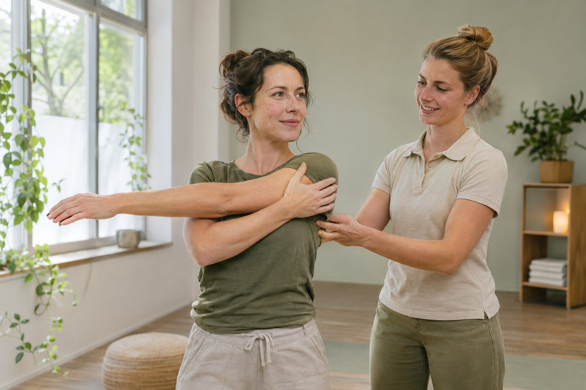

Physiotherapie
Wieder leichter
Wieder leichter
bewegen.

Die Treppe zu Hause, der Weg zur Arbeit, die Runde im Park. Was möchtest du wieder leichter schaffen?
Mein erster Termin
Wir sprechen über deinen Alltag und schauen uns gemeinsam an,
welche Bewegungen dir schwerfallen. Bring bequeme Kleidung und,
falls vorhanden, deine Verordnung mit.